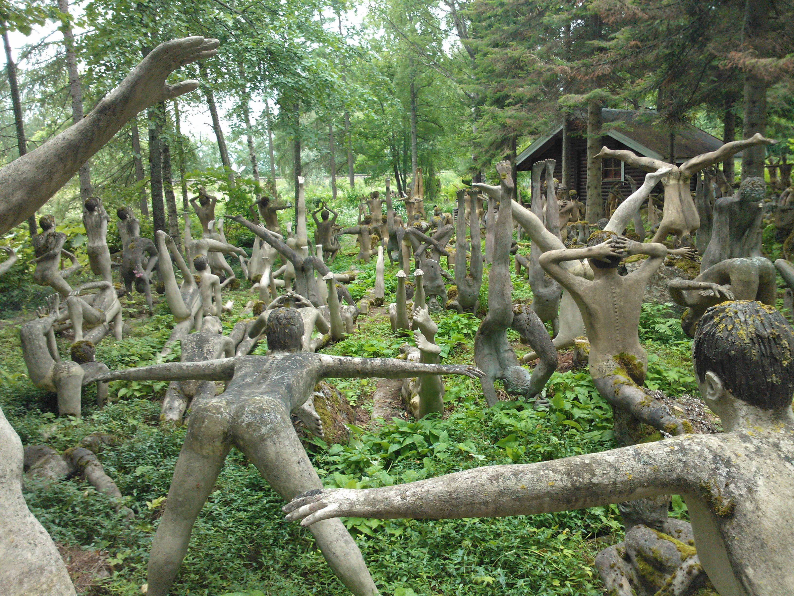
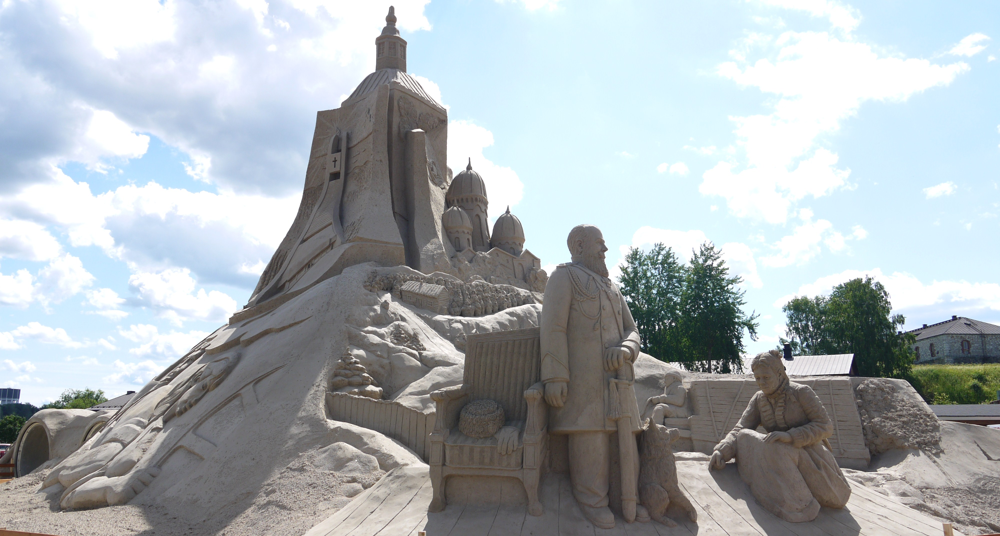

Jääkauden siirtämää Kummakiveä voi käydä ihmettelemässä Ruokolahdella.

Pohjois-Karjalan korkein vaara Pielisen rannassa.
Jääkauden siirtämää Kummakiveä voi käydä ihmettelemässä Ruokolahdella.
Parikkalan patsaspuisto on vaikuttava taiteellinen kokonaisuus.

Joka vuosi noin kaksi miljoonaa kiloa hiekkaa käytetään Lappeenrannan Hiekkalinna-tapahtuman veistoksiin.
